Comparação de todos os crânios
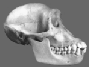
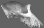
{kind=link}
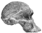
{kind=link}
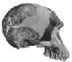
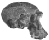

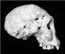
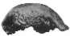

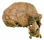
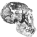
{kind=link}
{kind=link}
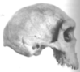
{kind=link}
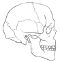
- Chimpanzé, Gorila
- Sts 5, Stw 53, OH 24, ER 1813
- D2700, Homem de Java, Homem de Pequim, ER 1470
- ER 3733, WT 15000, Petralona, Homem da Rodésia, humano moderno
Os crânios na primeira linha são de primatas modernos. Os crânios na segunda linha são fósseis que (quase) todos os criacionistas consideram primatas, enquanto os da última linha são (quase) todos considerados humanos. Os crânios na terceira linha são aqueles sobre os quais os criacionistas discordam quanto à classificação como primatas ou humanos. (Para facilitar a comparação, alguns crânios foram refletidos para que todos fiquem voltados na mesma direção.)
A tabela a seguir resume a diversidade de opiniões criacionistas sobre alguns dos itens mais proeminentes no registro fóssil humano.
| Espécime | Cuozzo (1998) |
Gish (1985) |
Mehlert (1996) |
Bowden (1981) Menton (1988) Taylor (1992) Gish (1979) |
Baker (1976) Taylor e Van Bebber (1995) |
Taylor (1996) Lubenow (1992) |
Line (2005) |
|
|---|---|---|---|---|---|---|---|---|
|
ER 1813 (510 cc) |
Primata | Primata | Primata | Primata | Primata | Primata | Humano ??(2) |
| Java (940 cc) |
Primata | Primata | Humano | Primata | Primata | Humano | Humano | |
| Peking (915- 1225 cc) |
Primata | Primata | Humano | Primata | Humano | Humano | Humano | |
|
ER 1470 (750 cc) |
Primata | Primata | Primata | Humano | Humano | Humano(1) | Humano ??(3) |
| ER 3733 (850 cc) |
Primata | Humano | Humano | Humano | Humano | Humano | Humano | |
| WT 15000 (880 cc) |
Primata | Humano | Humano | Humano | Humano | Humano | Humano | |
Como esta tabela mostra, embora os criacionistas sejam enfáticos ao afirmar que nenhum desses é um fóssil transicional e que todos são ou macacos ou humanos, eles não conseguem concordar sobre quais são quais. De fato, há vários criacionistas que mudaram de opinião sobre alguns fósseis. Eles nem sequer parecem estar convergindo para uma opinião consistente. Gish e Taylor ambos costumavam considerar o Homem de Pequim um macaco e o 1470 um humano, mas agora Gish diz que ambos são macacos, e Taylor diz que ambos eram humanos. Agora estamos até vendo o fenômeno de criacionistas que não conseguem decidir se um crânio individual é humano ou macaco - e, no entanto, eles estão bastante certos de que não pode ser um intermediário (veja os rodapés para exemplos).
Curiosamente, duas das pesquisas criacionistas mais proeminentes sobre as origens humanas, Gish e Lubenow, mantêm visões amplamente divergentes. Bowden, que também escreveu um livro sobre a evolução humana, concorda com nenhum deles, e Mehlert, que escreveu vários artigos sobre evolução humana em revistas criacionistas, tem ainda outra opinião, assim como Cuozzo em seu livro de 1998 sobre neandertais, assim como Line em um artigo de 2005 revisando o registro fóssil dos hominídeos. Cuozzo assumiu a posição mais extrema ainda para um criacionismo da Terra jovem, dizendo que até mesmo fósseis de H. erectus (nos quais ele inclui o Turkana Boy) não devem ser considerados humanos. (O criacionismo da Terra antiga Hugh Ross assume uma posição ainda mais extrema, alegando que nem mesmo os neandertais devem ser classificados como humanos.)
Pode-se apontar que os evolucionistas também discordam sobre como os fósseis devem ser classificados, a quais espécies pertencem, etc. Verdade suficiente. Mas, de acordo com o pensamento evolutivo, esses fósseis provêm de um número de espécies estreitamente relacionadas intermediárias entre os hominídeos e os humanos. Se isso for verdade, esperaríamos encontrar que alguns deles são difíceis de classificar, e é o que ocorre.
Por outro lado, os criacionistas afirmam que os macacos e os humanos estão separados por uma grande lacuna. Se isso for verdade, decidir em que lado dessa lacuna se encontram os fósseis individuais deveria ser trivialmente fácil. Obviamente, não é esse o caso.
ER 1813 (H. habilis?, 510 cc) é quase totalmente ignorado pelos criacionistas, mas é seguro dizer que todos os classificariam como um símio (o que era verdade até a Linha 2005). Poucos mencionam ER 3733 (H. erectus, 850 cc) também, mas aqueles que o fazem parecem considerá-lo humano (embora seja difícil ter certeza no caso de Bowden).
Como se esperaria, dado seu esqueleto essencialmente humano, praticamente todos os criacionistas consideram o Turkana Boy como humano, embora Cuozzo tenha sido uma exceção recente. (Cuozzo reconhece, é claro, que é diferente de qualquer chimpanzé moderno; ele acredita que os chimpanzés degeneraram do Homo erectus, assim como ele acredita que os humanos modernos degeneraram dos neandertais.)
Seria fascinante saber o que os criacionistas pensam sobre fósseis como o OH 12 (H. erectus, 750 cc), o Sangiran 2 (H. erectus, 815 cc), o OH 7 (H. habilis, 680 cc) e o OH 13 (H. habilis, 650 cc), mas infelizmente poucos criacionistas sequer mencionam esses fósseis, muito menos os discutem em profundidade.
Os crânios de Dmanisi recentemente descobertos sobrepõem-se à fronteira entre erectus/habilis de tal forma que os criacionistas quase os ignoraram totalmente. Os dois que os abordaram, no entanto, discordam: Line considera que todos os crânios de Dmanisi pertencem à mesma população (humana), enquanto Lubenow (2004), de forma estranha, considera que o maior crânio é humano, enquanto os dois menores são símios (embora não haja discussão sobre os fósseis; esses vereditos estão enterrados nas tabelas de fósseis no final do livro).
Notas de rodapé
1. Na 2ª edição de Bones of Contention (2004), Lubenow não está tão certo quanto antes de que ER 1470 seja humano, afirmando (p.310) que "[ER 1470] tem uma capacidade craniana de 800 cc e pode muito bem ser humano." Ele termina sua discussão sobre o fóssil (p.329) com: "Dito tudo isso, ainda coloquei um ponto de interrogação ao lado dele. O que podemos dizer no momento presente é que não há compelente razão pela qual ele não possa ser humano." Em outras palavras: ele não pode dizer! Retornar ao texto
2. Aspas de citação de Wolpoff em Paleoantropologia (1999), que fala sobre as semelhanças entre ER 1813 e Homo erectus, e conclui: "Se a avaliação de KNM-ER 1813 por White e Wolpoff estiver correta, então este crânio, com uma capacidade craniana de apenas cerca de 509 cm3, pode ter pertencido a um humano muito pequeno." O que significa, presumivelmente, que também há a possibilidade de não ter pertencido a um humano. Em outras palavras: ele não consegue dizer! Retornar ao texto
3. A linha diz sobre ER 1470: "Embora tenha sido encontrado um crânio de gorila com a mesma capacidade craniana (752 cm3) que a de KNM-ER 1470, o crânio deste último é muito mais provavelmente o de um humano do que o de um macaco." Ou seja, há uma possibilidade de pertencer a um macaco, o que significa: ele não pode dizer! Retornar ao texto
Referências
Baker S.: Bone of contention: is evolution true?, Evangelical Press, 1976Bowden M.: Ape-men: fact or fallacy? Bromley,Kent:Sovereign, 1981. Ed. 2
Cuozzo J.W.: Enterrado vivo: a verdade surpreendente sobre o homem neandertal. Green Forest, Arkansas: Master Books, 1998, p.101
Gish D.T.: Evolução: os fósseis dizem não, San Diego: Creation-Life Publishers, 1979. Ed. 3 (esta é a terceira edição de um livro publicado pela primeira vez em 1972 e estava um pouco desatualizado em 1979)
Gish D.T.: A evolução: o desafio do registro fóssil, El Cajon, CA:Creation-Life Publishers, 1985.
Line, P.: Evidências fósseis para os supostos hominídeos, Technical Journal 19(1):22-42, 2005.
Lubenow M.L.: Ossos de contenda: uma avaliação criacionista de fósseis humanos, Grand Rapids, MI: Baker Books, 1992.
Lubenow M.L.: Ossos de contenda (2ª edição): uma avaliação criacionista de fósseis humanos, Grand Rapids, MI: Baker Books, 2004.
Mehlert A.W. : Australopithecus e Homo habilis - ancestrais pré-humanos ? Creation Ex Nihilo Technical Journal, 10.2, 219-40, 1996.
Menton D.N.: A evidência científica para a origem do homem, 1988. (um ensaio criacionista)
Taylor P.S.: The illustrated origins answer book, Mesa, Arizona: Eden Productions, 1992. Ed. 4
Taylor P.S.:Quem é quem e o que é o que no mundo dos "elos" perdidos?, 1996
Taylor P.S. e Van Bebber M.: Quem é quem e o que é o que no mundo dos "elos" ausentes?, 1995 (uma versão anterior de Taylor 1996)
Esta página faz parte do FAQ sobre Fósseis de Hominídeos no Arquivo TalkOrigins.
Página Inicial |
Espécies |
Fósseis |
Criacionismo |
Leitura |
Referências
Ilustrações |
O que há de novo |
Feedback |
Pesquisa |
Links |
Ficção
http://www.talkorigins.org/faqs/homs/compare.html, 28/10/2008
Copyright © Jim Foley
|| Envie-me um email